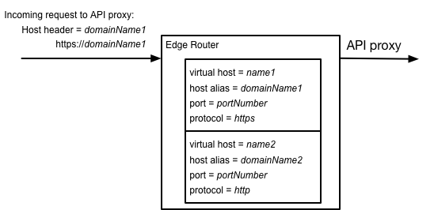
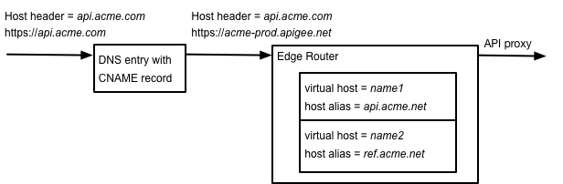

This feature is currently in Beta for Edge for the Cloud.
Self-service virtual hosts for Edge for the Cloud require that you enable TLS. For information about the Beta release of the self-service TLS feature, see the Self-service TLS/SSL Beta release.
In Edge, a Router handles all incoming API traffic. That means all HTTP and HTTPS requests to an Edge API proxy are first handled by an Edge Router. Therefore, API proxy request must be directed to the IP address and open port on a Router.
A virtual host lets you host multiple domain names on a single server or group of servers. For Edge, the servers correspond to Edge Routers. By defining virtual hosts on a Router, you can handle requests to multiple domains.
A virtual host on Edge defines a protocol (HTTP or HTTPS), along with a Router port and a host alias. The host alias is typically a DNS domain name that maps to a Router's IP address.
For example, the following image shows a Router with two virtual host definitions:

In this example, you have two virtual host definitions. One handles HTTPS requests on the domain domainName1, the other handles HTTP requests on domainName2.
On a request to an API proxy, the Router compares the Host header of the incoming request to the list of host aliases defined by all virtual hosts to determine which virtual host handles the request.
cURL commands, browsers, and many other utilities automatically set the Host header with the domain of the request. If for any reason your app is not setting the Host header automatically, you must set it manualy.
When you create a virtual host, you must specify the following information:
For example, you specify the following information when you create a virtual host:
You can define multiple virtual hosts on an Edge Router that share the same port number. However, the host alias for each virtual host must be unique, and they must match in support for TLS. That is, all virtual hosts on the same port must all support TLS, or none.
For example, based on the setting above for the virtual host, a request to an API proxy uses the form:
https://apis.acme.com/{proxy-base-path}/{resource-path}
where:
In Edge for the Cloud, when you first create an Edge organization, Apigee automatically created two environments (test and prod), two virtual hosts in each environment (default and secure), and DNS records for each host alias.
By creating DNS records for each host alias, Cloud customers do not need to know the IP address of the Edge Routers.
The host alias of each virtual host contains the name of the organization and environment, as shown in the following table:
| Environment | Virtual host name | Host alias | Port | TLS enabled |
|---|---|---|---|---|
| prod | default | {org-name}-prod.apigee.net | 80 | No |
| secure | {org-name}-prod.apigee.net | 443 | Yes | |
| test | default | {org-name}-test.apigee.net | 80 | No |
| secure | {org-name}-test.apigee.net | 443 | Yes |
For example, the default domain name of an organization called "myorg" in the prod environment is "myorg-prod.apigee.net". Therefore, to access an API proxy in that organization, you use a URL in the form:
http://myorg-prod.apigee.net/{proxy-base-path}/{resource-path}
https://myorg-prod.apigee.net/{proxy-base-path}/{resource-path}
However, a domain name containing "apigee.net" may not be what you want to expose to your customers. Paid Apigee customers can use a DNS entry and CNAME record to map a domain name to your organization on Edge. They must also create a virtual host with the host alias set to that domain name. This lets developers access your API through a domain specific to your company.
Free and trial accounts cannot create virtual hosts and are limited to the four virtual hosts created for them at Edge registration time.
For example:
https://apis.acme.com/{proxy-base-path}/{resource-path}
See About host aliases and DNS names below for more.
When you install Apigee Edge for Private Cloud, there are no default organizations, environments, or virtual hosts created for you. After you complete the Edge installation process, your first action is typically to create an organization, environment, and virtual host through the "onboarding" process.
To perform onboarding, run the following command on the Edge Management Server node:
/opt/apigee/apigee-service/bin/apigee-service apigee-provision setup-org -f configFile
where configFile contains the information necessary to create a user, organization, environment, and virtual host.
For example, you create:
You can later add any number of organizations, environments, and virtual hosts to your on-premises version of Edge. For more information, see:
Virtual hosts are opened on the Edge Router. Therefore, you have to ensure that the port that you specify for the virtual host is open on the Router. You can use a command in the form below to open a port:
$ iptables -A INPUT -m state --state NEW -m tcp -p tcp --dport 9001 -j ACCEPT --verbose
After running that command, you can access your APIs by using a URL in the form:
http://<router-ip>:9001/{proxy-base-path}/{resource-path}
Note that this URL uses the IP address of the Router and the virtual host port on the Router to access your APIs. Typically, you do not publish your APIs to customers with an IP address and port number. Instead, you define a DNS entry for the router and port. For example:
http://myAPI.myCo.com/{proxy-base-path}/{resource-path}
When you define the DNS entry, then you also must create a virtual host with a host alias that matches the domain name of the DNS entry. From the example above, you would specify a host alias of myAPI.myCo.com when you create the virtual host.
See About host aliases and DNS names below for more.
To create a virtual host, create an XML object that defines the virtual host. For example, the following XML object defines a virtual host. For a complete description of all properties of a virtual host, see http://docs.apigee.com/node/36626:
<VirtualHost name="vhostName">
<HostAliases>
<HostAlias>hostAlias</HostAlias>
</HostAliases>
<Interfaces>
<!-- Private Cloud only -->
<Interface>interfaceName</Interface>
</Interfaces>
<Port>portNumber</Port>
<SSLInfo>
<Enabled>trueFalse</Enabled>
<ClientAuthEnabled>trueFalse</ClientAuthEnabled>
<KeyStore>keystoreRef</KeyStore>
<KeyAlias>keyAlias</KeyAlias>
<TrustStore>truststoreRef</TrustStore>
<IgnoreValidationErrors>trueFalse</IgnoreValidationErrors>
</SSLInfo>
<Properties>
<Property name="proxy_read_timeout">timeout</Property>
<Property name="keepalive_timeout">timeout</Property>
<Property name="proxy_request_buffering">onOff</Property>
<Property name="proxy_buffering">onOff</Property>
<!-- ssl_protocols are Private Cloud only -->
<Property name="ssl_protocols">protocolList</Property>
<Property name="ssl_ciphers">cipherList</Property>
</Properties>
</VirtualHost>
A virtual host has several properties that you set when you create it. The most important are:
| Property | Description |
|---|---|
| name | Use the virtual host name to reference the virtual host in an API proxy or in an API call. |
| host alias | Typically the DNS name of the virtual host.
The host alias must be unique across all organizations and environments. |
| port | The Router port of the virtual host. All requests through the virtual host go through a specific Router port. For example, port 443 for TLS access over HTTPS and port 80 for HTTP access.
Note: Cloud customers can only create TLS-enabled virtual hosts on port 443. |
| SSLInfo (TLS) | For a virtual host that supports TLS, the keystore containing the TLS cert and key, key alias, and any other TLS information.
Note: Cloud customers can only create TLS-enabled virtual hosts on port 443. |
One property that you set for a virtual host is the host alias. The host alias is typically the DNS name of the virtual host. How you set the host alias depends on your type of Edge installation: Cloud or Private Cloud.
In Edge for the Cloud, when you first create an Edge organization, Apigee automatically creates two environments (test and prod), two virtual hosts in each environment (default and secure), and DNS records for each virtual host.
The host alias of the virtual hosts contains the name of the organization and environment. Therefore, a request through a virtual host has the form:
Typically, you want to create virtual hosts that use your domain name, rather than use the default apigee.net domain. To do so, you must first create your own DNS entry and CNAME record.
The following figure shows a typical configuration for how Edge processes an API request:

In this example:
In this example, you specify the following information in a virtual host definition:
See http://docs.apigee.com/node/36606 for more.
Like with the Cloud, you create virtual hosts that use your own domain name for the host alias. You then create your own DNS entry and CNAME record to access those virtual hosts.
One of the differences between Cloud and Private Cloud is that in the Cloud Apigee automatically created DNS names for your organizations, in the form:
In Edge for the Private Cloud, you have to create the DNS entries to the IP address and port of your Router.
For example, you specify this information in a virtual host definition:
The following figure shows a typical configuration for how Edge processes an API request:
In this example:
See http://docs.apigee.com/node/36611 for more.
You can use the Edge management UI to see the virtual hosts defined in an environment:
If the virtual host is configured to use TLS/SSL, a lock icon appears next to the name of the virtual host. That means an TLS/SSL certificate, key, and certificate chain has been uploaded to Edge and associated with the virtual host. To see information about the available certificates:
Expand the keystores until you see the certificate.
You can also use the Edge management APIs to view information about virtual hosts. For example, the http://docs.apigee.com/node/17056 API returns a list of all virtual hosts:
$ curl -X GET -H "accept:application/xml" \
https://api.enterprise.apigee.com/v1/o/{org_name}/environments/{env_name}/virtualhosts \
-u orgAdminEmail:pWord
where orgAdminEmail:pWord is the username and password of the org admin, and org_name/env_name specify the organization and environment containing the virtual host. Sample response:
[ "default", "secure" ]
To see information about a specific virtual host, use the http://docs.apigee.com/node/17061 API:
$ curl -X GET -H "accept:application/xml" \
https://api.enterprise.apigee.com/v1/o/{org_name}/environments/{env_name}/virtualhosts/{vhost_name} \
-u orgAdminEmail:pWord
where vhost_name is the name of the virtual host. For example, you can specify the vhost_name as "secure" to see the configuration of the default secure virtual host created by Apigee:
<VirtualHost name="secure">
<HostAliases>
<HostAlias>orgname-prod.apigee.net</HostAlias>
</HostAliases>
<Interfaces/>
<Port>443</Port>
<Properties/>
<SSLInfo>
<ClientAuthEnabled>false</ClientAuthEnabled>
<Enabled>true</Enabled>
<KeyAlias>freetrial</KeyAlias>
<KeyStore>ref://freetrial</KeyStore>
<IgnoreValidationErrors>false</IgnoreValidationErrors>
</SSLInfo>
</VirtualHost>
In Edge for Private Cloud, replace the api.enterprise.apigee.com domain name with
When you create a new API proxy, Edge automatically configures it to use all available virtual hosts in the organization. A request to an API proxy through a virtual host uses the form:
https://{host-alias}/{proxy-base-path}/{resource-path}
where:
In the XML configuration of an API proxy, you use the
<HTTPProxyConnection>
<BasePath>/v1/my/proxy/basepath</BasePath>
<VirtualHost>secure</VirtualHost>
<VirtualHost>default</VirtualHost>
</HTTPProxyConnection>
For example, <VirtualHost>secure</VirtualHost> means a client can call the API proxy using the host alias of the "secure" virtual host.
You typically modify the virtual hosts associated with an API proxy when:
To use the Edge management UI to edit the API proxy:
<HTTPProxyConnection>
<BasePath>/v1/my/proxy/basepath</BasePath>
<VirtualHost>default</VirtualHost>
<VirtualHost>secure</VirtualHost>
<VirtualHost>MyVirtualHost</VirtualHost>
</HTTPProxyConnection>